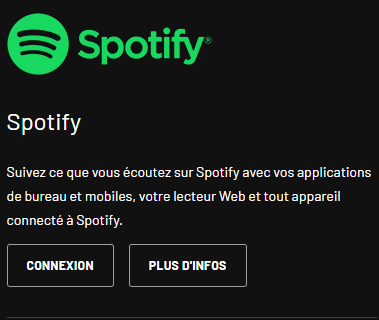

Music To stream
Comment installer Music To Stream sur OBS Studio  ou sur Streamlabs Desktop
ou sur Streamlabs Desktop  ?
?
Étape 1 :
Pour tout commencez il vous faut un compte Last.fm (Pour traquer votre musique sur spotify).
Créer toi un compte ici
Étape 2 :
Connecte ton compte spotify avec Last.fm.
Rien de plus simple clique ici

Puis clique sur le bouton Connexion sur la page de Last.fm
Étape 3 :
Télécharge notre overlay !
Pour le télécharger rien de plus simple clique ici
Maintenant extrait le fichier zip dans un dossier que tu ne dois pas supprimer si tu veux garder l'overlay.
Étape 4 :
La configuration !
Pour configuer l'overlay allez dans le fichier musictostream.js
Modifier la ligne 3 :
const nomUtilisateur = "username";
Votre Pseudo est disponible en haut à gauche lors que vous été sur Last.fm
Par exmeple mon pseudo Last.fm est Toine_YT alors cela rend comme ça
const nomUtilisateur = "Toine_YT";
Étape 5 :
La clé api !
Créer ton api ici
Puis mes la à la ligne 6
Étape 6 :
Position de l'overlay !
Pour postioner ton overlay rien de plus simple rend toi dans le fichier index.html puis modifi la ligne 6
Les variants sont disponible si dessous :
Pour le moment il n'y a que top_left.css
Dernier étape:
Ajoute l'overlay sur OBS Studio ou Streamlabs Desktop
Pour cela ajoute un source navigateur en 1920x1080 en cochent fichier local et en séléctioent le fichier index.html